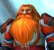

Deemer
Age : 32
Sexe : Homme
Race : Nain
Faction : Alliance
Formation : Chasseur
Description : Né dans à l'Est des Paluns, il a survenu au Clan de Dragonmaw caché par ses parents durant la seconde guerre.
Il s'engage dans les troupes de l'Alliance comme fusiler dès sa majoritée,. Il est envoyé à Lorderon avec sa section pour participer au opération d'Arthas pour contrer la marche du fléau à Hearthglen. Il parvient a tenir tête aux assaults des Morts-vivants jusqu'à l'arrivée de Uther, mais il est gravement blessé et ne peut plus combattre pour longtemps. Il est donc rapatrié au Palun et ne peut que s'imformer de la trahïson d'Arthas et a l'offensive de la Légion Ardente.
Comme par vengance vis à vis des Réprouvés, il s'est rallié au Seigneur Tyran et suis les ordres du Chevalier noir Turannos jusqu'à l'assault de Lorderon ou il fut pas présent car une nouvelle fois blessé. Il a constitué avec la derniere poche de résistance de l'Ordo Imperium bien apres la chute du culte. C'est en étant sauvé par un fantassin de la Phalange Ecarlate qu'il décide après d'avoir chercher à Stormwind des survivants de l'Ordo Imperium, de rejoindre les troupes de Hiranthus.
Plus d'infos sur Deemer >>>